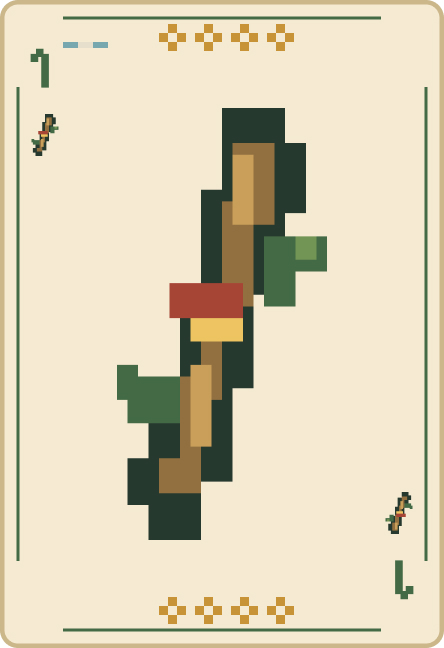
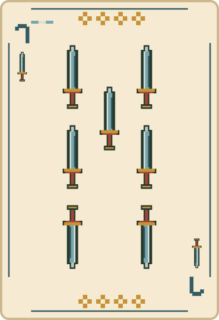

El mazo
Se juega con 40 cartas españolas: se quitan los 8 y los 9. Cada carta tiene una fuerza; la más alta gana la vuelta.
Las cuatro bravas, de mayor a menor, son:


Después siguen: 3, 2, 1 de oros o copas, 12, 11, 10, 7 de bastos o copas, 6, 5 y 4. Las cartas del mismo rango empatan.